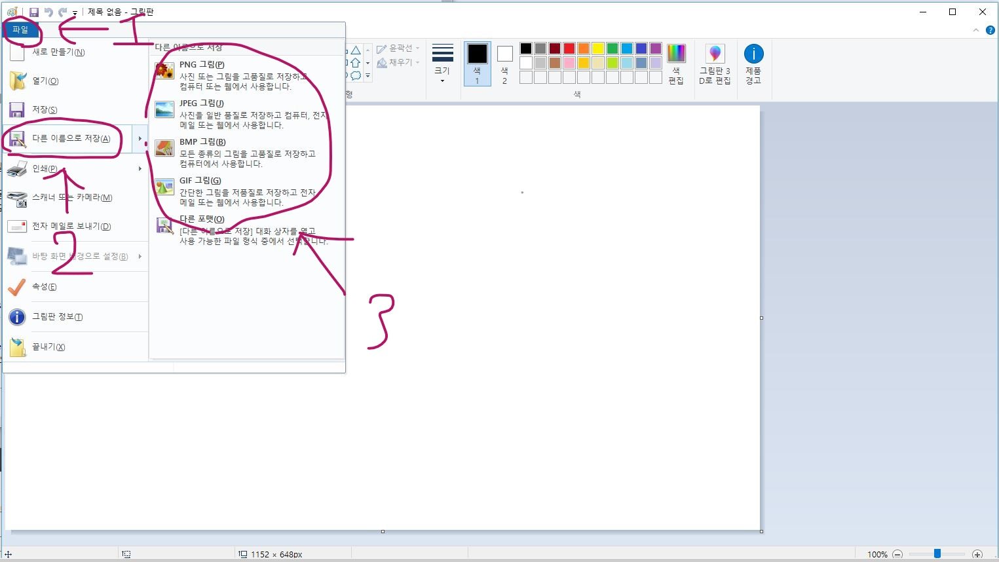
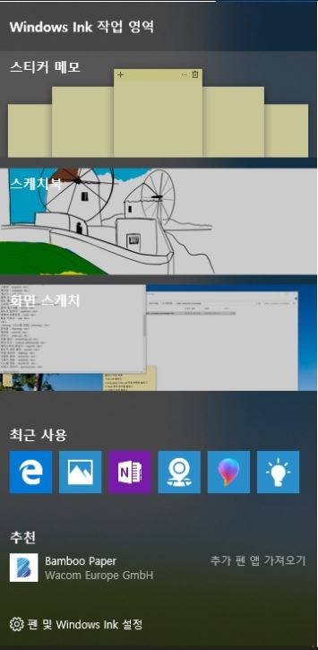
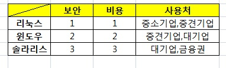
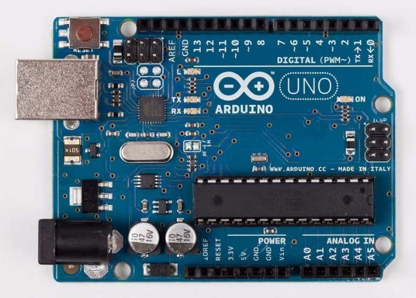
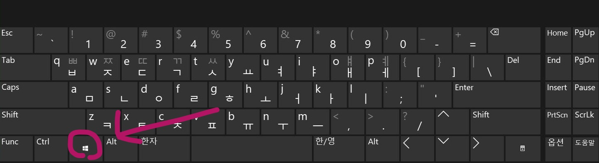

각종 컴퓨터 지식 페이지 입니다.
이전 페이지로 돌아가기
JPG(JPEG), PNG, GIF 파일
○ JPG(JPEG)
1. 정지 영상의 압축과 복원 방식에 대한 국제표준의 하나.
ISO(국제 표준화 기구)와 ITU-TSS(전기 통신 표준화 센터)에서 추진하고 있는 컬러 정지 화면의 부호화 방식의 표준화를 말하며 그래픽 이미지의 압축이나 해제 방식.
JPEG는 원래 ISO(국제 표준화 기구)와 CCITT(국제 전신 전화 자문)의 영상전문가들의 협력을 의미했으나, 요즘에는 정지 압축 영상의 파일형식(.JPG, .JPEG) 또는 그와 관련한 표준이라는 의미로 많이 쓴다.
2. Joint Photographic Experts Group의 준말.
JPEG는 컬러 이미지를 위한 국제적인 압축표준으로 CCITT(Consultatve Committee International Telegraph and Telehpone) 와 ISO에서 인정하고 있다.
JPEG는 이미지를 작은 블록으로 나누어 많은 양의 이미지 정보를 줄이는 DCT(Discrete Co-sine Transformer) 알고리즘에 기초를 두고 있다.
압축률을 조절할 수 있으며 압축률이 높으면 보다 많은 양의 정보를 지우기 때문에 이미지의 질이 낮아진다.
이미지가 손상된 것을 느끼지 못할 정도의 압축은 약 25:1 정도, 즉 25MB의 이미지를 1MB로 줄일 수 있다.
용량대비 높은 화질로 인터넷에서 가장 많이 사용하는 비트맵 포맷이지만 문자, 선, 세밀한 격자 등이 있는 이미지에서는 나쁜 품질을 보여 이를 보완한 PNG와 같은 비손실 압축포맷이 있다.
JPG, JPEG (만화애니메이션사전, 2008. 12. 30., 한국만화영상진흥원)
사진이나 복잡한 그래픽에는 JPEG를 사용하세요.
사진 같은 연속적인 톤의 이미지에 가장 잘 맞습니다.
1,600만개의 서로 다른 색을 가진 이미지를 표현할 수 있습니다.
이미지 정보 일부가 손실되고 파일 크기가 감소되는 '손실이 많은' 형식입니다.
투명도는 지원하지 않습니다.
애니메이션은 지원하지 않습니다.
○ PNG
웹에서 최상의 비트맵 이미지를 구현하기 위해 W3C(world wide web consortium)에서 제정한 파일 포맷.
보통 핑이라고 발음하며, 지금까지 웹상의 표준 이미지 파일 포맷인 GIF의 대안으로 개발되었다.
이 포맷은 24비트의 이미지를 처리하면서 어떤 경우는 GIF보다 작은 용량으로도 이미지 표현이 가능하고 원 이미지에 전혀 손상을 주지 않는 압축과 완벽한 알파 채널(alpha channel)을 지원하는 등 이전에는 불가능했던 다양한 기능들을 포함하고 있다.
하지만 아직 이 포맷을 주관 포맷으로 지원하는 사이트들이 거의 없고 이미지 편집 프로그램들에서도 많은 지원이 이루어지지 않고 있기 때문에 GIF나 JPG를 이 포맷이 100% 대체하기에는 다소 시간이 걸릴 듯하다.
[PNG [portable network graphics] (색채용어사전, 2007., 도서출판 예림)
단색이나 로고, 기하학적 모양의 이미지에는 PNG나 GIF를 사용하세요.
PNG는 몇 가지 단색이나 로고, 클립아트 같은 선이 있는 이미지, 텍스트가 있는 이미지에 가장 잘 맞습니다.
PNG는 수백만 가지의 다른 색을 가진 이미지를 표현할 수 있습니다. PNG는 표현하고자 하는 색이 얼마나 많으냐에 따라 PNG-8, PNG-24, PNG-32 세 가지로 분류할 수 있습니다.
PNG는 파일을 압축해 크기를 줄이기는 하지만, 내용을 버리지는 않습니다. 즉, '무손실' 형식이죠.
'투명'모드 설정을 할 수 있어 이미지 밑으로 모든 것을 볼 수 있죠.
JPEG와 비교하면 파일 크기는 커지는 경향이 있지만, 샤용된 색상의 수에 따라 GIF보다 작거나 커질 수 있습니다.
○ GIF
Graphics Interchange Format'의 약자로 인터넷에서 그래픽을 압축하여 빠르게 전송하려는 목적으로 개발되었다.
1987년 미국의 컴퓨서브(CompuServe)사가 처음 개발하였으며, 2002년 12월 현재 버전은 1989년 발표한 GIF89a이다.
파일 압축은 렘펠지브웰치(LZW; Lempel-Ziv-Welch) 방법을 사용하며, 원래 사이즈의 40%까지 줄일 수 있다.
JPEG 파일에 비해 압축률은 떨어지지만 사이즈가 작아 전송속도가 빠르고 이미지의 손상도 적다는 장점을 가지고 있다.
이미지파일 내에 그 이미지의 정보는 물론 문자열(comment)과 같은 정보도 함께 저장할 수 있고, 여러 장의 이미지를 한 개의 파일에 담을 수도 있다.
또 통신용 파일이므로 인터레이스 형식으로도 저장된다.
인터넷상에서 이미지파일 포맷으로 가장 널리 사용되어 사실상 표준으로 평가된다.
그러나 저장할 수 있는 이미지가 256색상으로 제한되어 있어 다양한 색상을 필요로 하는 이미지를 저장하는 형식으로는 적당하지 않다.
GIF [Graphics interchange Format] (두산백과)
단색이나 로고, 기하학적 모양의 이미지에는 PNG나 GIF를 사용하세요.
PNG와 마찬가지로 GIF는 몇 가지의 단색이나 로고, 글립아트 같은 선이 있는 이미지, 텍스트가 있는 이미지에 가장 잘 맞습니다.
GIF는 256가지 색상을 표현할 수 있습니다.
GIF 역시 '무손실' 형식입니다.
GIF는 투명도를 지원하긴 하지만, 오직 한 가지 색상만 '투명'하게 설정할 수 있습니다.
JPEG와 비교해 파일 크기가 큽니다.
애니메이션을 지원합니다.
수정됨 2018.04.30 → 오후 6:46 2018-05-16
그림 파일 확장자 변환하기
그림 파일에는 .png .jpeg .bmp .gif 등 이러한 확장자를 가진 그림 파일들이 있는데요.
다른 어떤 프로그램을 이용하지 않고 쉽고 간단하게 변환해 봅시다.
일단 그림판을 열어 주세요. 윈도우+r 후 mspaint 명령어를 입력하시면 바로 그림판이 실행됩니다.
그후 ctrl+o를 눌러 파일명을 바꿀 파일을 열고 파일 메뉴에서 다른이름으로 저장 그리고 원하는 확장자를 찾아 다시 저장 해 주시면 됩니다.

오후 9:51 2018-05-05
Windows Ink
윈도우를 오랫 사용했지만 최근에야 알게된 기능입니다.
바로 windows ink 인데요. 윈도우+w 키를 누르면 사용하실수 있습니다.

윈도우+w 키를 누르시면 오른쪽 하단에 뜨며 메모장, 스케치북, 화면 스케치등 숨겨진 기능을 이용할수 있습니다.
오후 9:31 2018-05-05
개념 정리
포직스
컴퓨터 처리 환경을 위한 이식 가능한 운영 체제 인터페이스로, IEEE P1003 기술 위원회에서 작성한 컴퓨터 운영 체제 서비스의 표준. 당초에는 유닉스 사용자 그룹이 유닉스를 기반으로 표준화 작업을 시작하였으나, 미국의 국내 표준인 ANSI 표준으로 제정할 목적으로 IEEE가 인계하여 추진하게 되었다. P1003 기술 위원회는 여러 개의 작업반을 구성하여 주제별로 표준화를 추진한다. 대표적인 것으로는 ㉠ POSIX.0(포직스(POSIX) 개방 시스템 환경에 대한 전반적 지침), ㉡ POSIX.1(커널(Kernel), 운영 체제 인터페이스), ㉢ POSIX.2(셸(shell)과 툴(tool), 사용자 명령 등), ㉣ POSIX.3(표준 규격의 적합성 검증법), ㉤ POSIX.4(실시간 POSIX 확장), ㉥ POSIX.5(에이다(Ada) 언어), ㉦ POSIX.6(보안 기능) 등이다. 이 중에서 POSIX.1은 1988년에 ANSI/IEEE 1003.1 표준과 연방 정보 처리 표준(FIPS)으로 채택되고, 이어서 1990년에 ISO/IEC 9945-1로서 국제 표준화되었다. POSIX라고 하면 POSIX.1을 가리키기도 한다. POSIX 표준은 유닉스를 기반으로 하였으나 다른 운영 체제에도 쉽게 이식될 수 있다.
응용 프로그램의 휴대성을 제공하기 위해 설계된 IEEE 표준의 집합, IEEE 1003.1은 유닉스 같은 OS인터페이스를 정의하고 1003.2는 셀과 유틸리티를 정의하며, 1003.4는 실시간 확장을 정의한다.
포직스 [Portable Operating System Interface for Computer Environment] (IT용어사전, 한국정보통신기술협회)
유닉스

리눅스는 비용이저렴하지만 그만큼 보안도 적절하기 때문에 중소기업에서 사용되며,
윈도우는 리눅스보다 비용은 조금 높지만 더 좋은 보안성을 가져 중견기업가 대기업에 적절합니다
솔라리스(유닉스)는 비용이 아주높고 보안성도 뛰어나 보안에 중요한 금융권 대기업에서 사용합니다.
솔라리스 라고도 한다.
보안이 필요한 금융권 대기업에서 보안프로그램을 위해 사용된다.
리눅스
1989년 핀란드 헬싱키대학에 재학중이던 리누스 토르발스(Linus Torvalds)가 유닉스를 기반으로 개발한 공개용 오퍼레이팅시스템(OS)으로, 1991년 11월 버전 0.02이 일반에 공개되면서 확대 보급되기 시작하였다. 유닉스(Unix)가 중대형 컴퓨터에서 주로 사용되는 것과는 달리, 리눅스는 워크스테이션이나 개인용 컴퓨터에서 주로 활용한다.
리눅스는 소스 코드를 완전 무료로 공개하여 전세계적으로 약 5백만 명이 넘는 프로그램 개발자 그룹을 형성하게 되었으며, 이들에 의해 단일 운영체제의 독점이 아닌 다수를 위한 공개라는 원칙하에 지속적인 업그레이드가 이루어지고 있다.
파일구성이나 시스템기능의 일부는 유닉스를 기반으로 하면서, 핵심 커널 부분은 유닉스와 다르게 작성되어 있다. 인터넷 프로토콜인 TCP/IP를 강력하게 지원하는 등 네트워킹에 특히 강점을 지니고 있으며, 유닉스와 거의 유사한 환경을 제공하면서 무료라는 장점 때문에 프로그램 개발자 및 학교 등을 중심으로 급속히 사용이 확대되고 있다.
리눅스는 각종 주변기기에 따라 혹은 사용하는 시스템의 특성에 맞게 소스를 변경할 수 있으므로 다양한 변종이 출현하고 있다.
오픈소스 기반으로 보안이 취약하지만 이용자가 많아 바로 취약점에 대한 패치가 이루어진다.
1991년 핀란드 헬싱키 대학 학생이던 리누스 토발즈(Linus Torvalds)가 대형 기종에서만 작동하던 운영 체계인 유닉스를 386 기종의 개인용 컴퓨터(PC)에서도 작동할 수 있게 만든 운영 체계. 인터넷을 통해 프로그램 소스 코드를 완전 무료로 공개하여 사용자는 원하는 대로 특정 기능을 추가할 수 있을 뿐만 아니라, 어느 플랫폼에도 포팅이 가능하다. 이러한 장점 때문에 일반 기업과 인터넷 서비스업체, 연구 기관 등에서 수요가 늘어나고 있다. 우리나라에서도 1999년부터 리눅스 사용자가 꾸준히 증가하면서 리눅스를 상품화하려는 업체들이 늘고 있으며, 리눅스의 설치 및 구성, 그리고 관리 운영 기술 및 프로그램 작성 교육이 점차 활발해지고 있다.
리눅스 [Linux] (두산백과)
임배디드시스탬
기계 또는 전자 장치에 두뇌 역할을 하는 마이크로 프로세서(Microprocessor)를 장착해 설계함으로써 효과적인 제어를 할 수 있도록 하는 시스템을 의미한다. 기기를 동작하는 소프트웨어를 컴퓨터처럼 디스크에서 읽어 들이는 것이 아니라 칩에 담아 기기에 내장시킨 형태의 장치다. 자동차, 휴대폰, 가전제품, 공장 자동화 장비 등 각종 전자기기들 대부분이 임베디드 시스템을 갖추고 있다. 예를 들어 휴대폰에 TV 기능을 탑재한 DMB 기능을 임베디드 시스템이라고 볼 수 있다. 즉, 본 시스템에 '끼워 넣는(embed)' 시스템을 뜻한다.
특히 디지털 홈 시대를 맞아 가전제품에 쓰일 임베디드 기술이 주목받고 있는데 현재에도 세탁기, 냉장고 등에 쓰이고 있다. 예를 들면 세탁물의 종류에 따라 물과 세제와 강약 등을 제어하는 세탁기, 밥을 지을 때 들어가는 재료에 따라 다르게 작동되는 전기밥솥, 냉장실 또는 냉동실에 들어가는 재료에 따라 자동으로 반응하는 냉장고 등이다. 또한 임베디드 시스템은 공장자동화나 가정 자동화와 같이 자동화 분야에서는 필수적인 요소로 부각되고 있으며, 군사·의료·교통 환경 등 인간생활의 전 분야와 연계되어 있어서 향후 관련 시장이 크게 확대될 것으로 전망되고 있다.
임베디드 소프트웨어는 여러 가지로 나뉘어지는데, 그 중에서도 특히 '임베디드 OS(운영체제)'가 중요하게 부각되고 있다. 임베디드 시스템 용도에 맞는 기능을 얼마나 빨리 잘 구현해 주느냐가 이 운영체제의 핵심인데, 윈도CE, 팜OS 등이 대표적이고 리눅스 채택도 늘고 있다.
임베디드 시스템 (시사상식사전, 박문각)
아두이노

아두이노는 다양한 스위치나 센서로부터 입력 값을 받아들여 LED나 모터와 같은 전자 장치들로 출력을 제어함으로써 환경과 상호작용이 가능한 물건을 만들어 낼 수 있다. 예를 들어 단순한 로봇, 온습도계, 동작 감지기, 음악 및 사운드 장치, 스마트 홈 구현, 유아 장난감 및 로봇 교육 프로그램 등의 다양한 제품들이 아두이노를 기반으로 개발 가능하다. 또한 아두이노는 회로가 오픈소스로 공개되어 있으므로 누구나 직접 보드를 만들고 수정할 수 있다.
마이크로컨트롤러란 마이크로프로세서와 입출력 모듈을 하나의 칩으로 만들어 특정 기능을 수행하는 작은 컴퓨터를 말한다. 아두이노는 이러한 마이크로컨트롤러 보드와 관련된 개발 도구 및 환경을 모두 포함한다. 아두이노는 처음 아트멜(Atmel AVR) 마이크로컨트롤러를 기반으로 만들어졌지만, 용도에 따라 다양한 보드가 있으며 개발 툴과 여러 기능에 대한 라이브러리가 제공되고 있다. 아두이노와 유사하게 피지컬 컴퓨팅(Physical Computing)을 가능하게 하는 마이크로컨트롤러와 플랫폼은 다양하지만 아두이노는 마이크로컨트롤러를 기반으로 하는 작업을 단순화하였으며 다음과 같은 다양한 강점을 가진다.
1. 저비용 : 아두이노 보드는 다른 마이크로컨트롤러 플랫폼에 비해 저렴하다.
2. 크로스 플랫폼 : 아두이노 소프트웨어는 윈도우즈, 맥OSX, 리눅스 운영체제 모두에서 작동한다.
3. 간단하고 명확한 프로그래밍 환경 : 아두이노 프로그래밍 환경은 초보자들이 사용하기 쉬울 뿐 아니라 실력자들이 여러가지 다양한 시도를 하기 위한 유연성을 제공한다. 소프트웨어 개발을 위한 통합개발환경(IDE)가 제공되며 컴파일 된 펌웨어(특정 하드웨어 상에서 동작하는 소프트웨어)를 USB를 통해 손쉽게 업로드 할 수 있다.
4. 오픈 소스 : 아두이노 하드웨어 및 소프트웨어는 오픈 소스 툴이기 때문에 고급 프로그래머들에 의해 작성된 확장 소프트웨어 라이브러리들을 구할 수 있으며, 회로 설계자들이 손쉽게 자신만의 모듈을 만들고 개선할 수 있다.
최초의 아두이노는 2005년 이탈리아 이브레아(Ivrea)에서 시작되었다. 마시모 반지(Massimo Banzi) 교수와 데이비드 쿠아르티에예스(David Cuartielles) 교수는 인터랙션 디자인 전문학교(IDII)에서 공부하는 하드웨어 미숙련자 및 비전공 학도들을 위해 기초적인 지식만으로도 쉽게 프로그램 작성이 가능하고, 또한 저렴하게 구입 가능한 마이크로컨트롤러 보드를 개발하고자 하였다. 아두이노의 하드웨어와 소프트웨어가 오픈소스로 개방되면서 수많은 개인과 기업들이 아두이노를 기반으로 다양한 모양과 성능의 아두이노 및 아두이노 호환 보드를 개발하였으며, 2013년에는 70만 개의 아두이노 공식 보드를 사용할 수 있게 되었다.
아두이노 통합 개발 환경은 소스 코드를 작성하고 편집할 수 있도록 하며, 코드를 아두이노 하드웨어가 이해할 수 있는 명령어로 컴파일하여 보드에 이를 업로드 하는 기능을 제공한다. 소스코드는 C++ 언어를 기반으로 하기 때문에 아두이노에서는 C 언어의 표준라이브러리 함수가 사용 가능하다. 아두이노 하드웨어는 실세계와 연동되어 동작하는 센서, 가속도계, LED, 스피커, 디스플레이 등의 여러 구성품들이 쉽게 탈부착 가능하도록 핀들로 구성되어 있으며, 소프트웨어 개발 환경을 통해 작성되고 업로드 된 코드(명령어)가 실행된다.
아두이노 [Arduino] (두산백과)
컴파일러
고급언어로 쓰인 프로그램이 컴퓨터에서 수행되기 위해서는 컴퓨터가 직접 이해할 수 있는 언어로 바꾸어 주어야 한다. 이러한 일을 하는 프로그램을 컴파일러라고 한다. 예를 들어 원시언어가 파스칼(Pascal)이나 코볼(Cobol)과 같은 고급언어이고 목적언어가 어셈블리 언어나 기계어일 경우, 이를 번역해 주는 프로그램을 컴파일러라 한다.
컴파일을 하기 위하여 입력되는 프로그램을 원시 프로그램이라 하고 이 프로그램을 기술한 언어를 원시언어(source language)라 한다. 또 번역되어 출력되는 프로그램을 목적 프로그램이라 하고 이 프로그램을 기술한 언어를 목적언어(object language 또는 target language)라 한다. 한 프로그램을 컴파일하여 목적 프로그램으로 바꾸어 놓으면, 원시 프로그램을 수정하지 않는 한 계속 반복해서 수행할 수 있다.
크로스 컴파일러(cross-compiler)라는 것은 원시 프로그램을 컴파일러가 수행되고 있는 컴퓨터의 기계어로 번역하는 것이 아니라, 다른 기종에 맞는 기계어로 번역하는 컴파일러를 말한다. 이 밖에 다른 번역기를 살펴보면 어셈블러(assembler), 인터프리터(interpreter), 그리고 프리프로세서(preprocessor) 등을 들 수 있다.
어셈블러는 어셈블리 언어로 쓰여진 프로그램을 입력으로 받아 기계어 프로그램으로 바꾸어 주는 번역기이며, 어떤 번역기는 원시언어를 특수한 형태의 중간언어로 변환하는데 인터프리터는 이러한 중간언어를 입력으로 받아 목적언어로 변환하지 않고 직접 수행하는 프로그램이다.
고급언어로 쓰여진 프로그램의 의미를 수행하는데 있어서 컴파일러는 그와 동등한 의미를 갖는 목적 프로그램으로 바꾸어 목적 프로그램을 수행함으로써 결과를 얻고, 인터프리터는 원시 프로그램의 의미를 직접 수행하여 결과를 얻는다. 원시 프로그램의 수정 없이 계속 반복 수행하는 응용 시스템에서는 컴파일러가 효율적이며, 개발 시스템이나 교육용 시스템에서는 인터프리터가 더 능률적이다.
컴파일러 [compiler] (두산백과)
오후 9:25 2018-05-02
윈도우 명령어들
윈도우에는 각종 응용프로그램들을 명령어로 실행할수 있습니다.
그 실행 방법은 이렇습니다 컴퓨터 자판의 윈도우키+R 키로 실행 창을 띄워 그곳에 명령어를 입력해 사용할수 있습니다.

다음은 윈도우 명령어들 입니다.
종류가 많으니 Ctrl+F로 원하시는 것을 찾으시면 편합니다.
[보조 프로그램]
그림판 - mspaint
메모장 - notepad
계산기 - calc
캡쳐 도구 - snippingtool
워드 패드 - wordpad
스티커 메모 - stikynot (xp~win8.1 win10x)
원격 데스크톱 - mstsc
윈도우 탐색기 - explorer
명령어 프론프트 - cmd
화상 키보드 - osk
[시스탬 관련]
문자표 - charmap
제어판 - control
마우스 - main.cpl
전원 옵션 - powercfg.cpl
관리 도구 - control admintools
레지스트리 편집기 - regedit
윈도우 버전 확인 - winver
작업 관리자 - taskmgr
이벤트 뷰어 - eventvwr
사용자 계정 - netplwiz
시스템 정보 - msinfo32
서비스 관리자 - services.msc
시스템 속성 - sysdm.cpl
프로그램 및 기능 - appwiz.cpl
디스플레이 설정 - desk.cpl
사운드 및 오디오 장치 - mmsys.cpl
[컴퓨터 관련]
컴퓨터 관리자 - compmgmt.msc
장치 관리자 - devmgmt.msc
성능 모니터 뷰 - perfmon.msc
공유 폴더 - fsmgmt.msc
디스크 관리 - diskmgmt.msc
디스크 정리 - cleanmgr
로컬 사용자 및 그룹 - lusrmgr.msc
시스템 구성(xp) - msconfig
2018.05.01